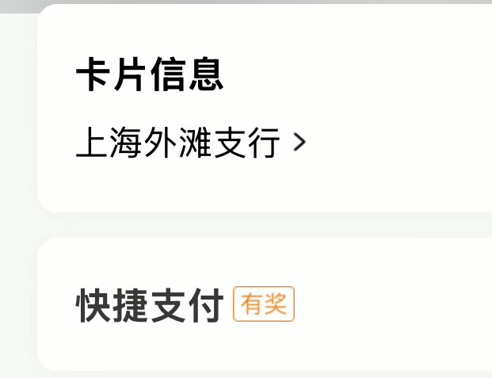

Aoi M
@aoim33
冷知识：招商银行在柜台有提供更换开户行的服务
而他是我目前所知的能够更换开户行的国内的银行（可能不止它一个）
而这个功能他们从来都没有拿出来宣传过，只有去网店主动和客户经理说明才可以
结合泥老师的这条推文来看，或许我们需要认真评估这个小小的服务带来的巨大作用

泥伏雷闯关记
@Nicole_yang88
如果你们在四五线城市手头有几百甚至上千个，建议在一线城市开设几个新账户。不要追问原因，记住一个道理——“大鱼必须游向深水”。
一线城市就是更安全、更广阔的“深水区”，能为资产提供更好的保护和机会。
这件事越早行动越好，细节不便公开讨论，但方向绝对正确🤣